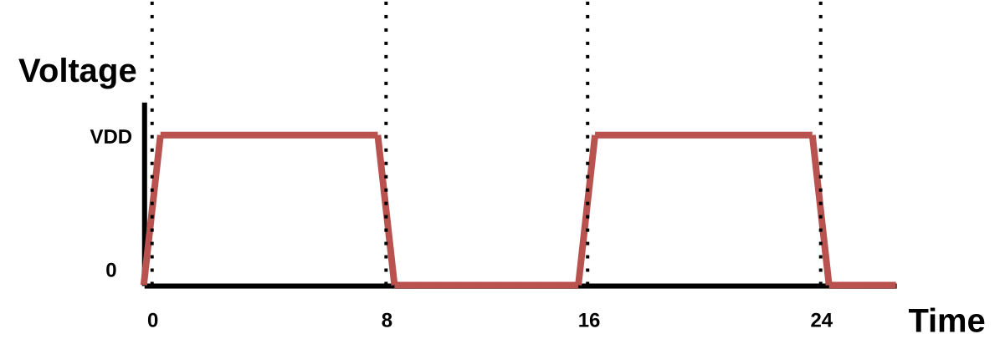

Commands Reference Manual
load_lef
Import LEF library files. Technology LEF, i.e. the LEF containing the routing layer info, must be the first in the line.
Syntax:
%> load_lef {<filenames>}
Arguments:
<filenames>is the list of the LEF files to be loaded
load_lib
Import LIB library files. Each LIB file is read as a corner. Error reporting is enabled using the -errors flag.
Syntax:
%> load_lib {<filenames>} ?-errors?
Arguments:
<filenames>is the list of the LIB files to be loaded-errorsis an optional flag that enables error reporting
load_verilog
Import design. Supported format is gate-level Verilog netlist.
Syntax:
%> load_verilog {<filenames>}
load_spef
Import design parasitics. Supported format is SPEF. Different parasitics may be used for worst case and best case analysis Arguments -longest and -shortest are used to associate parasitics with analysis type. Error report is enabled using the -errors flag.
Syntax:
%> load_spef (-longest | -shortest) ?-errors? {filenames}
Arguments:
-longestis for the worst case analysis-shortestis for the best case analysis-errorsis an optional flag that enables error reporting
read/load_saif
Import SAIF file. A SAIF file is used to annotate the circuit of each gatepin switching activity and logic state duration during simulation.
Syntax:
%> read_saif <saif_file_>
# or alternatively
%> load_saif <saif_file_>
list_saif_info
List all SAIF information stored in memory.
Syntax:
%> list_saif_info
set_timing_model
Define the timing model used in the current session.
Syntax:
%> set_timing_model <nldm | ccs>
set_timing_RC_mode
Define the interconnect timing model used in the current session.
Syntax:
%> set_timing_RC_mode <lumpedRC | pimodelRC | detailedRC>
set_SET_analysis_mode
Set the SET analysis mode. Two modes are available, Vector-based and Probabilistic. Each mode is described at Section SET Propagation STA-modes. The default analysis mode is Vector-based.
Syntax:
%> set_SET_analysis_mode <0: Vector-based | 1: Probabilistic>
Example
%> set_SET_analysis_mode 0
create_clock

Create a clock in the current design and define its waveform. The -waveform argument is optional and can be used to create a pulse whose edges are explicitly defined with the given timestamps.
Syntax:
%> create_clock <source_gatepin> -period <period_value> ?-name <clock_name>? ?-waveform {edge_list}?
Arguments:
-periodis the period of the clock-nameis the name of the clock-waveformis the waveform rise and fall edge pairs
Example
%> create_clock clk -name clk -period 10 -waveform {0 8}
set_input_delay
Set delay from environment launching elements to design Top-Level inputs and constrain them. Specified delay may be used for worst case or best case analysis. Also, specified delay direction can be either rise or fall. Input delay must be specified with reference to a clock. Argument -clock is used to specify the reference clock.
Syntax:
%> set_input_delay <delay_value> ?-clock <clock_name>? ?-rise|-fall? ?-max|-min? ?-add_delay? {port_pin_list}
Arguments:
-clockis the name of the reference clock-riseis for rise delay specification-fallis for fall delay specification-maxis for worst case analysis-minis for best case analysis-add_delayis used to add the specified delay to the already stored delay
set_output_delay
Set delay from design Top-Level outputs to environment capturing elements and constrain them. The specified delay must be used either for worst-case or best-case analysis. Also, the specified delay direction can be either rise or fall. Output delay must be specified with reference to a capturing clock. Argument -clock is used to specify the reference clock.
Syntax:
%> set_output_delay <delay_value> ?-clock <clock_name>? ?-rise|-fall? ?-max|-min? ?-add_delay? {port_pin_list}
Arguments:
-clockis the name of the reference clock-riseis for rise delay specification-fallis for fall delay specification-maxis for worst case analysis-minis for best case analysis-add_delayis used to add the specified delay to the already stored delay
report_timing
Perform STA using the specified library corner. Both worst case and best case analysis are supported. Also, for performance reasons, slack is calculated by default only on timing path endpoints. Argument -backannotate is used to calculate global slack.
Syntax:
%> report_timing ?-longest|-shortest -corner <corner_index>? ?-backannotate?
Arguments:
-longestis for the worst case analysis-shortestis for the best case analysis-corneris used to select the library corner to be used for the STA timing analysis-backannotateis used to calculate global slack
create_particle_profile
Create a particle profile from the parameters of Double Exponential (DEXP) current source (tdelay, tau1, tau2, q).
Syntax:
%> create_particle_profile -name <name> -tdelay <double exponential delay> -tau1 <double exponential tau1> -tau2 <double exponential tau2> -q <double exponential q>
Arguments:
-nameis the name of the particle profile-tdelayis the delay till the start of the current pulse waveform-tau1is the rise time of the pulse waveform-tau2is the fall time of the pulse waveform-qis the collected charge which is relevant to the peak current of the pulse waveform
Example
create_particle_profile -name p1 -tdelay 0.1ns -tau1 0.1 -tau2 0.1 -q 400
delete_particle_profile
Delete a particle profile from memory.
Syntax:
%> delete_particle_profile <profile_name>
clear_particle_profiles_info
Clear all the particle profiles stored in memory.
Syntax:
%> clear_particle_profiles_info
list_particle_profiles
List all the particle profiles stored in memory.
Syntax:
%> list_particle_profiles
create_SET_scenario
Create a single SET scenario in memory. The create SET scenario will be considered when generating SET pulses. User can either define a particle profile with -profile parameter or by specify right away the parameters of the DEXP current source.
Syntax:
%> create_SET_scenario <driver_gatepin> ?<endpoint>? (-profile <particle_profile_name> | <tdelay>n <tau1>p <tau2>p <q>)
Arguments:
<driver_gatepin>is the name of the driver gate pin<endpoint>is the name of the endpoint gate pin (for which information is stored)<particle_profile_name>is the name of the particle profile<tdelay>is the delay till the start of the current pulse waveform<tau1>is the rise time of the pulse waveform<tau2>is the fall time of the pulse waveform<q>is the collected charge which is relevant to the peak current of the pulse waveform
Example
Example 1:
create_SET_scenario SET_testcase/U25/Q 0.1n 47p 347p 700f
Example 2:
create_SET_scenario SET_testcase/U25/Q -profile p1
load_SET_scenarios
A scenario file consists of scenarios specifying a driver pin, an endpoint and the parameters of the Double Exponential (DEXP) current source (tdelay, tau1, tau2, q).
Example
Scenario file example:
module1/reg1/Q module1/reg2/D 0.5n 54p 391p 342f
module2/reg1/Q module2/reg2/D 0.5n 56p 377p 367f
The command is used to load a scenario file in memory, which will be used to generate SET pulses in future releases.
Syntax:
%> load_SET_scenarios <filename>
Arguments:
<filename>is the name of the scenario file
list_SET_scenario
List information for a specific SET scenario based on the specified scenario index.
Syntax:
%> list_SET_scenario <scenario_index>
list_SET_scenarios
List information for all the SET scenarios stored in memory.
Syntax:
%> list_SET_scenarios
clear_SET_scenarios
Clear all the SET scenarios stored in memory.
Syntax:
%> clear_SET_scenarios
create_SET_scenario_case_analysis
Create SET case analysis for specified scenario (-scenario). SET case analysis consists of a scenario index, which represents the affected scenario, a boolean constant value which is applied to specified gatepins and a list of gatepins which will be set to previously defined constant value.
Syntax:
%> create_SET_scenario_case_analysis -scenario <scenario index> <boolean constant value> {<gatepin>}
Example
%> create_SET_scenario_case_analysis -scenario 0 0 buffer_tree/AND1/B
list_SET_scenario_case_analysis
List specified SET scenario case analysis info. Use -all argument to list all SET scenarios’ case analysis info.
Syntax:
%> list_SET_scenario_case_analysis -scenario <scenario index> | -all
clear_SET_scenario_case_analysis
Clear specified SET scenario case analysis info. Use -all argument to clear all SET scenarios case analysis info.
Syntax:
%> clear_SET_scenario_case_analysis -scenario <scenario index> | -all
set_static_probability
Set the logic-1 static probability value to the specified gatepin. Use -value argument to define the probability value. Note that the logic-1 and logic-0 probabilities are complementary, so only one of the two must be defined. Use -gatepin argument to define the gatepin for which the probability is set. Use -all argument to set the probability for all gatepins. Use -startpoints argument to set the probability for startpoint gatepins.
Syntax:
%> set_static_probability -value <probability_value> (-gatepin <gatepin_name> | -all | -startpoints)
Arguments:
-valueis the static probability logic-1 value-gatepin <gatepin_name>is the name of the gatepin for which the probability is to be set-allis used to set the probability for all gatepins-startpointsis used to set the probability for startpoint gatepins
list_cubes_propagating_input_SETs_to_output
Generate a list of Boolean cubes containing the side-input values that enable the propagation of SETs from the inputs of the gate to the specified output gatepin.
Syntax:
%> list_cubes_propagating_input_SETs_to_output <gatepin_name> -inputSET [<0 (logic-0) | 1 (logic-1) | 0e (negative SET) | 1e (positive SET) | dc (don't care)> ...]
Arguments:
inputSETis the list of input SETs. Available options are 0 (logic-0), 1 (logic-1), 0e (negative SET), 1e (positive SET), dc (don't care)
list_static_probabilities
Propagate and list all static probabilities stored in memory per gatepin in a column format report. Use -significant_digits argument to set the floating point precision in the report.
Syntax:
%> list_static_probabilities -significant_digits <significant_digits>
Arguments:
-significant_digitsis the floating point precision in the report
reset_static_probabilities
Reset static probabilities annotated by SAIF file or set by set_static_probability
Syntax:
%> reset_static_probabilities
set_SET_generation_parameters
Set the SET generation model and each model’s parameters. Two models can be specified, Double Exponential (DEXP) or Bias Dependent (BIAS). Bias Dependent model parameters consist of the auxiliary Capacitance (-biascapacitance), Recombination Currents (-recomb) and Fermi (-fermi) constants. SET generation model and its parameters apply to all loaded scenarios when generate_SET_glitch or generate_SET_scenario_glitch are used to generate the SET glitch.
Syntax:
%> set_SET_generation_parameters -model <DEXP | BIAS> -biascapacitance <BIAS capacitance> -recomb <recombination currents constant> -fermi <fermi constant>
Arguments:
-modelis the SET generation model (Double Exponential or Bias Dependent)-biascapacitanceis Bias Dependent model auxilary capacitance to enure charge conservation-recombis the Bias Dependent model Recombination Currents constant-fermiis the Bias Dependent model Fermi constant
Example
%> set_SET_generation_parameters -model BIAS -biascapacitance 1p -recomb 1e11 -fermi 0.01
generate_SET_scenario_glitch
Generate an SET glitch from a single scenario (-scenario) load in memory or from all scenarios (-all) loaded and store the rise and fall arrival times and slews at the receiver gatepins of the driver gatepin net.
Syntax:
%> generate_SET_scenario_glitch -scenario <scenario_index> | -all ?-corner <corner_index>?
Arguments:
-scenariois the scenario index to be used for the SET glitch generation-allis used to generate the SET glitch for all the defined SET scenarios-corneris the index of the library corner to be used for the SET glitch generation
Example
%> generate_SET_scenario_glitch -scenario 1 -corner 0
%> generate_SET_scenario_glitch -all -corner 0
generate_SET_scenario_custom_glitch
Generate a SET glitch as a PWL (Piece Wise Linear) voltage waveform to a receiver gatepin and store it as a new scenario. Afterwards, the specified glitch can be propagated through propagate_SET_scenario_glitch.
Syntax:
%> generate_SET_scenario_custom_glitch -scenario <receivergatepin> {t0 v0 t1 v1 ... tn vn} -corner <corner_index>
Arguments:
-scenariois the SET generation scenario, PWL Voltage Waveform at a receiver gatepin-corneris the index of the library corner to be used for the SET glitch generation
Example
%> generate_SET_scenario_custom_glitch -scenario buffer_tree/U2/A {0n 0 1n 0 1.005n 0.20 1.015n 0.90 1.02n 1.08 1.09n 1.08 1.2n 0.9 1.6n 0.1 1.8n 0 3n 0} -corner 0
propagate_SET_scenario_glitch
Propagate a SET glitch from a single scenario loaded in memory (-scenario) or from all scenarios loaded (-all). Before running this command, the SET pulse must be generated, using the command generate_SET_scenario_glitch.
Syntax:
%> propagate_SET_scenario_glitch -scenario <scenario_index> | -all ?-corner <corner_index>?
Arguments:
-scenariois the scenario index to be used for the SET glitch propagation-allis used to propagate the SET glitch for all the defined SET scenarios-corneris the index of the library corner to be used for the SET glitch propagation
Example
%> propagate_SET_scenario_glitch -scenario 1 -corner 0
%> propagate_SET_scenario_glitch -all -corner 0
set_SET_glitch_propagation_mode
Set the SET glitch propagation STA-mode. Three modes are available, "Vanilla", Detailed Timestamp-based and Bounded Timestamp-based. Each mode is described in section SET Propagation STA-modes. The default mode is "Vanilla".
Syntax:
%> set_SET_glitch_propagation_mode <0: "Vanilla" STA-mode | 1: Detailed TimeStamp-based STA-mode | 2: Bounded TimeStamp-based STA-mode>
generate_SET_glitch
Generate an SET glitch. The command requires specifying the SET generation scenario. The SET generation scenario consists of a specified driver pin, which represents the affected net, the endpoint where measurements are taken, and the Double Exponential Current Source (DEXP) parameters. The command created SPICE probes internally at all affected nets receivers, in order to take rise and fall arrival times and slew measurements. These probes are cleared after the glitch generation is completed. Upon completion, the command prints the calculated rise and fall arrival times and slews.
Syntax:
%> generate_SET_glitch -scenario <drivergatepin> <endpoint> <tdelay> <tau1> <tau2> <q> -corner <corner_index>
Arguments:
-scenariois the SET generation scenario, consisting of the driver gatepin, the endpoint, and the DEXP parameters-corneris the index of the library corner to be used for the SET glitch generation
Example
%> generate_SET_glitch -scenario ASU_2bufs/U1/Y ASU_2bufs/U2/A 0.1n 47p 347p 700f -corner 0
propagate_SET_glitch
Propagate the rise (-rise) and fall (-fall) arrival times and slews from the input gatepin given as argument (-gatepin) to the forward logic cone.
Syntax:
%> propagate_SET_glitch -gatepin <receivergatepinname> -rise {risearrival_1 riseslew_1 ... risearrival_N riseslew_N} -fall {fallarrival_1 fallslew_1 ... fallarrival_N fallslew_N} ?-corner <corner_index>?
Arguments:
-gatepinis the name of the input gatepin from where the SET propagation starts-riseis the list of rise arrival times and slews-fallis the list of fall arrival times and slews-corneris the index of the library corner to be used for the SET glitch propagation
Example
%> propagate_SET_glitch -gatepin buffer_tree/U2/A -rise {0.123118 0.052256} -fall {0.500256 0.693101}
set_net_supply
Set the voltage/current source supply for the specified net and define the transient specification of the supply. Supported transient specifications: Piece-Wise Linear (PWL), Double Exponential (DEXP).
Syntax:
%> set_net_supply <supplyname> <drivergatepin> <groundname> <transientspec> {<transientspec args>}
Example
%> set_net_supply ISET ASU_2bufs/U1/Y 0 DEXP {{0.5n 47p 647p 282f}}
simulate_net
Perform SPICE simulation for the specified gatepin net.
Syntax:
%> simulate_net <driver_gatepin>
set_spice_simulation_parameters
Specify SPICE simulation time step and total duration.
Syntax:
%> set_spice_simulation_parameters -timestep <timestepvalue> -totalduration <totaldurationvalue>
Arguments:
-timestepis the transient analysis time step value-totaldurationis the total duration value
create_net_spice_probe
Create a probe for storing SPICE simulation data. Voltage probes are specified at a single node with reference to GND, while current probes are specified at net supplies.
Syntax:
%> create_net_spice_probe <drivergatepin> (-node <spefnodename> | -vnode <voltagesourcename> | -all) ?-longest | -shortest?
Arguments:
-nodeis the SPEF net node-vnodeis the voltage source name-allis used to create probes at all nodes-longestis used for worst case analysis-shortestis used for best case analysis
Example
5> create_net_spice_probe ASU_2bufs/U1/Y -node 3:1 -longest
plot_spice_probe
Plot specified probe data. The desired probes are specified by their list index. Use the command list_spice_probes to print all spice probes and their index.
Syntax:
%> plot_spice_probe {probelist}
list_spice_probes
List all the SPICE probes stored in memory.
Syntax:
%> list_spice_probes
perform_exhaustive_SET_analysis
Performs exhaustive SET analysis. For each defined particle profile, iterates through all output gatepins and creates an SET scenario for each one. Then, after all scenarios have been created, generation followed by propagation of the SET glitch is performed for each SET scenario.
Syntax:
%> perform_exhaustive_SET_analysis
perform_SET_analysis
Heuristic SET analysis flow. Run the SET analysis for a set of particle profiles and a set of output gatepins. For each given output gatepin a SET scenario will be created for each given particle to perform the SET analysis flow (generation & propagation). This command is an alternative to perform_exhaustive_SET_analysis in case the user wants to run the analysis for specific portions of the circuit and particle profiles.
Syntax:
%> perform_SET_analysis -profiles {<profile1> <profile2> ...} -gatepins {<gatepin1> <gatepin2> ...}
Arguments:
-profilesis the list of particle profiles to be used for the SET analysis-gatepinsis the list of output gatepins to be used for the SET analysis
Example
%> perform_SET_analysis -profiles {p1 p2 p3} -gatepins {SET_testcase/U1/Q SET_testcase/U2/Q SET_testcase/U3/Q SET_testcase/U4/Q}
list_gatepins_set_analysis_info
List SET analysis information for a specific gatepin.
Syntax:
%> list_gatepins_set_analysis_info <gatepin_name>
list_all_gatepin_set_analysis_info
List SET analysis information for all gatepins.
Syntax:
%> list_all_gatepin_set_analysis_info
report_SET_scenario_timingpoints
Lists for a specific scenario the timingpoints, i.e., the forward logic cone gatepins that have been traversed by the glitch.
Syntax:
%> report_SET_scenario_timingpoints <scenario_index>
report_SET_generation_probabilities
Report positive and negative SET generations probabilities for all gatepins.
Syntax:
%> report_SET_generation_probabilities
eco_swap_component_pins
Rewire two input pins of a component.
Syntax:
%> eco_swap_component_pins <component_name> <pin_name_1> <pin_name_2>
Arguments:
<component_name>is the name of the target component to perform rewiring<pin_name_1>is the name of the first pin to be rewired<pin_name_2>is the name of the second pin to be rewired
eco_upsize_component
Upsize a component to the immediate larger component.
Syntax:
%> eco_upsize_component <component_name> ?-overlapsmethod <1 | 2 | 3>?
Arguments:
<component_name>is the name of the target component to upsize-overlapsmethodis the overlap handling method (optional)1: remove from rows and mark as illegal only the overlapping components (default)2: remove from rows and mark as illegal both the resized and the overlapping components3: remove from rows and mark as illegal only the resized component
eco_downsize_component
Downsize a component to the immediate smaller component.
Syntax:
%> eco_downsize_component <component_name> ?-overlapsmethod <1 | 2 | 3>?
Arguments:
<component_name>is the name of the target component to downsize-overlapsmethodis the overlap handling method (optional)1: remove from rows and mark as illegal only the overlapping components (default)2: remove from rows and mark as illegal both the resized and the overlapping components3: remove from rows and mark as illegal only the resized component
eco_charge_sharing
Insert charge-sharing logic to a target gatepin.
Syntax:
%> eco_charge_sharing <target_gatepin> -cell <delay_cell> -num <number_of_delay_cells> ?-placementmethod <0 (Default Placement) | 1 (Place in the centre-of-mass) | 2 (Place in the centre-of-mass and remove overlapping components)>?
Arguments:
<target_gatepin>is the name of the target gatepin to insert charge-sharing logic-cellis the name of the delay cell to be used for the charge-sharing logic-numis the number of delay cells to be used for the charge-sharing logic-placementmethodis the placement method (optional)0: place the new components at (0, 0) (default)1: place the new components at the centre of mass2: place the new components at the centre of mass and remove overlapping components
eco_fanout_decomposition
Perform fan-out decomposition in a target component by performing gate cloning on the target component and splitting the fan-out of the target gatepin.
Syntax:
%> eco_fanout_decomposition <target_component> ?-placementmethod <0 (Default Placement) | 1 (Place in the centre-of-mass) | 2 (Place in the centre-of-mass and remove overlapping components)>?
Arguments:
<target_component>is the name of the target component to perform fan-out decomposition-placementmethodis the placement method (optional)0: place the new components at (0, 0) (default)1: place the new components at the centre of mass2: place the new components at the centre of mass and remove overlapping components
eco_tmr_component
Apply Triple Modular Redundancy (TMR) to a target component. The target component is triplicated with the input of each replica being tied together and their outputs connected to a majority voter. As for the majority voter, UPSET uses the NAND based majority voter, which is shown in the figure.
Syntax:
%> eco_tmr_component <component_name> ?-placementmethod <0 (Default Placement) | 1 (Place in the centre-of-mass) | 2 (Place in the centre-of-mass and remove overlapping components)>?
Arguments:
<component_name>is the name of the target component to apply TMR-placementmethodis the placement method (optional)0: place the new components at (0, 0) (default)1: place the new components at the centre of mass2: place the new components at the centre of mass and remove overlapping components
eco_insert_filter
Insert a SET filter to a target gatepin. The SET filter is composed by a guard gate and a delay line.
Bug
The current version of SET filter insertion is supporting the insertion of an AND gate for the voting, instead of a guard gate. However, this is not correct, since the AND gate will result in broadening negative (1->0->1) SET pulses instead of attenuating them. Thus, the SET filter insertion should be updated to support the insertion of a guard gate in the next release.
Syntax:
%> eco_insert_filter <target_gatepin> -cell <delay_cell> -num <number_of_delay_cells> -AND <AND_cell> ?-placementmethod <0 (Default Placement) | 1 (Place in the centre-of-mass) | 2 (Place in the centre-of-mass and remove overlapping components)>?
Arguments:
<target_gatepin>is the name of the target gatepin to insert a SET filter-cellis the name of the delay cell to be used for the SET filter-numis the number of delay cells to be used for the SET filter-ANDis the name of the AND cell to be used for the SET filter-placementmethodis the placement method (optional)0: place the new components at (0, 0) (default)1: place the new components at the centre of mass2: place the new components at the centre of mass and remove overlapping components
eco_insert_cascaded_inverter
Insert a pair of cascaded inverters to a target gatepin.
Syntax:
%> eco_insert_cascaded_inverter <target_gatepin> -cells <cell 1> <cell 2> ?-placementmethod <0 (Default Placement) | 1 (Place in the centre-of-mass) | 2 (Place in the centre-of-mass and remove overlapping components)>?
Arguments:
<target_gatepin>is the name of the target gatepin to insert a cascaded inverter-cellsis the name of the INV cells to be used for the cascaded inverters-placementmethodis the placement method (optional)0: place the new components at (0, 0) (default)1: place the new components at the centre of mass2: place the new components at the centre of mass and remove overlapping components
legalise_components
Perform legalisation of the circuit components.
Syntax:
%> legalise_components -order <0 (all) | 1 (increasing) | 2 (decreasing) | 3 (centre-outwards)> -blockagesmethod <0 (Subrow Assignment - SRA) | 1 (Subrow Reassignment - SRR)> ?-timingdriven <longest | shortest>? ?-htmlreport <filename>?
Arguments:
-orderis the order of the legalisation0: all of the 3 supported orders and choose the best one1: increasing order of components x-coordinates2: decreasing order of components x-coordinates3: centre-outwards order of components x-coordinates
-blockagemethodis the blockage method0: Subrow Assignment - SRA1: Subrow Reassignment - SRR
-timingdrivenis the timing driven analysis (optional)-htmlreportis the name of the HTML report file to be generated (optional)